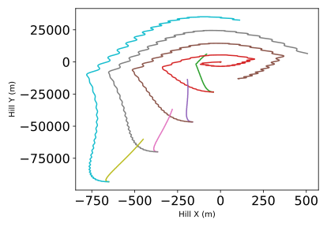
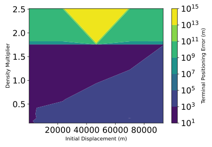

scenarioDragSensitivity¶
Overview¶
This script executes a parametric analysis of the control law examined in scenarioDragRendezvous, considering the performance of that control law across both increasing initial displacements and variations in atmospheric density.
This script is found in the folder src/examples and executed by using:
python3 scenarioDragSensitivity.py
The simulation layout is identical to that used in scenarioDragRendezvous. The simulator used in that scenario is run using a grid of true anomaly offsets and atmospheric densities using Python’s multiprocessing library, and a set of surface plots reflecting the controls’ terminal performance and trajectories are produced.
Illustration of Simulation Results¶
In this scenario, the differential drag scenario used in scenarioDragRendezvous is examined across a range of initial along-track orbit offsets and atmospheric densities. The resulting Hill-frame trajectories corresponding to every fifth simulation run are shown in the following image.
To visualize the sensitivity of terminal position and velocity errors to both increasing baseline and variations in density, the following surface plots - which show the scale of terminal errors as a function of atmospheric density and maneuver baseline - are shown below:
